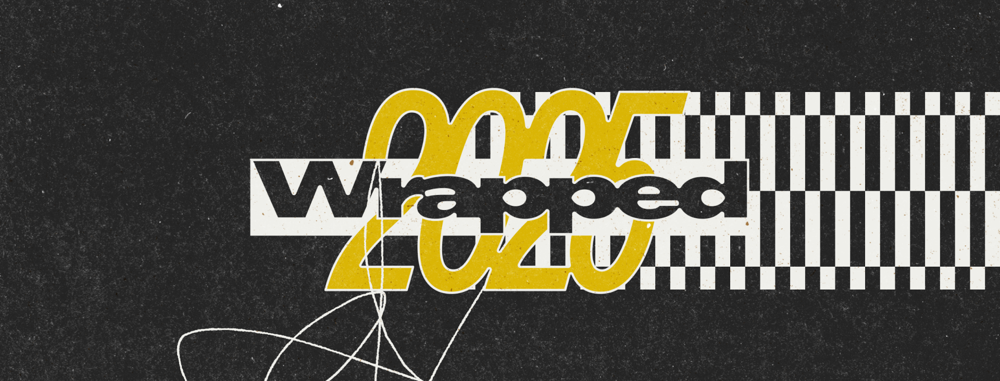
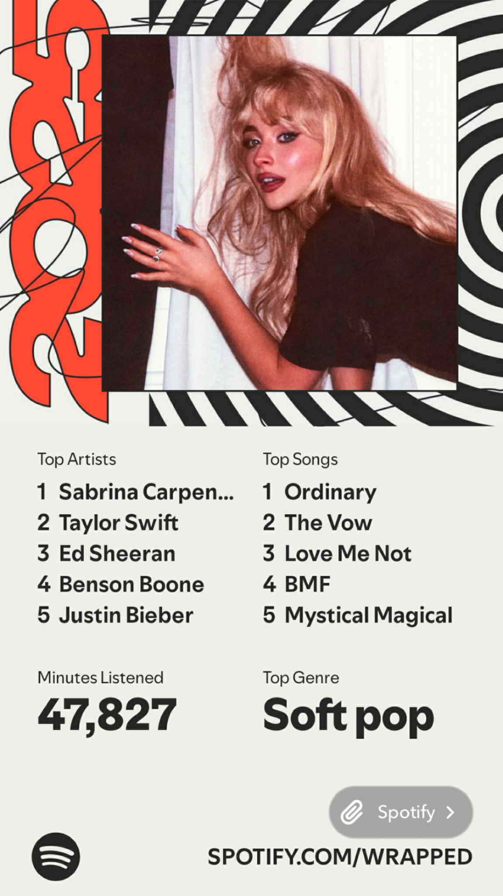

Introduction:
Spotify Wrapped always feels like it is revealing more about me than I expect. The songs I return to the artists I never get tired of and the moods I play on repeat all feel a little like a personal snapshot even though it is just music. This year I wondered what would happen if I treated it like an actual personality test. I took my Wrapped results and handed them to an LLM to see what it would say about who I am based only on the sounds I gravitate toward. I was curious whether AI could find patterns I never noticed or if it would just make confident guesses. It ended up feeling like a mix of insight and intuition and it was interesting to see how much of myself the model thought it could read from a year of listening.

Prompt:
I want you to analyze my personality based on my Spotify Wrapped. Here are my results.
My top artists are: 1. Sabrina Carpenter 2. Taylor Swift 3. Ed Sheeran 4. Benson Boone 5. Justin Bieber
My top songs are: 1. Ordinary 2. The Vow 3. Love Me Not 4. BMF 5. Mystical Magical
My top genres are: 1. Soft pop 2. Melodic Rap 3. Alternative R&B 4. C-Pop 5. Indie
Using this information please give me a personality overview. Include emotional tendencies social tendencies how I respond to stress how I express myself and how I connect with others. Explain which parts of your analysis are general assumptions and which parts are specifically based on patterns in my music taste. Also describe the limitations of trying to understand a person through their Spotify Wrapped.
Response:
Absolutely—it’s fascinating how much music preferences can reveal about a person’s emotional world and personality. Let’s break this down by analyzing your Spotify Wrapped, keeping in mind which aspects are generalized and which are inferred based on patterns in your musical taste.
🧠 Personality Overview Based on Your Spotify Wrapped
Your listening choices suggest you’re introspective, emotionally attuned, and value authentic expression. Emotion and storytelling seem to drive your musical preferences, likely reflecting deeper aspects of your inner world and social life.
Let’s explore some key facets:
- ❤️ Emotional Tendencies
Inferred from: Top artists (Sabrina Carpenter, Taylor Swift, Ed Sheeran), Top songs (“Ordinary”, “The Vow”, “Love Me Not”), Top genres (Soft pop, Alternative R&B)
- You likely experience emotions deeply and are not afraid to sit with complex feelings. Artists like Taylor Swift and Ed Sheeran are known for lyrical introspection and emotional vulnerability, suggesting you value emotional authenticity.
- Songs like “The Vow” and “Love Me Not” point toward an interest in love, connection, and emotional nuance—whether that’s unrequited love, devotion, or internal conflict.
- Soft pop and Alternative R&B often appeal to those who seek emotional resonance over musical flashiness. You probably turn to music to reflect, process feelings, and feel seen in emotionally dense moments.
- You may have a romantic soul and a nostalgic streak, idealizing moments, relationships, or possibilities.
This portion is more specifically tailored to your song and genre preferences.
- 🧑🤝🧑 Social Tendencies
Inferred from: Artist choices (mainstream + emotional), Genre diversity, Indie & C-Pop interest
- You’re socially intuitive but may prefer depth over breadth in your relationships. You appreciate artists who engage emotionally with their audience, suggesting you favor meaningful connections over surface-level interactions.
- The combination of emotionally expressive pop stars and more niche or international genres like C-Pop and Indie indicates that you’re open-minded and culturally curious—a sign of someone who values individuality but also enjoys shared musical tastes (you’re probably great at making playlists that speak to someone’s soul).
- You may be supportive and empathetic in your social circles, often being the “listener” or the friend who gives thoughtful advice.
This analysis is a blend of common psychological correlations with genre preferences (generalized) and specific inferences from your eclectic tastes (personalized).
- 😰 How You Respond to Stress
Inferred from: Mood orientation of your top music (soft, emotional, melodic), Lyrical themes of top artists/songs
- When stressed, you likely seek solace in music that reflects your feelings rather than distracts from them. This helps you validate your emotions and gradually discharge tension.
- You may have a tendency to ruminate but use music as a cathartic outlet. Melodic rap and indie music can serve as a bridge between emotional processing and creative release.
- Rather than suppressing emotion, you seem to lean into it—this means you might cry at a good lyric or let yourself be moved by a song rather than brushing it off. That’s a healthy, emotionally intelligent form of coping when balanced.
This section is a personality-to-music linkage that aligns with studies on emotional regulation and music preference (partly general, partly inferred from your top genres).
- 🎤 Self-Expression Style
Inferred from: Top genres (Alternative R&B and Indie), Top artists’ lyrical tone and delivery (Sabrina Carpenter, Benson Boone, Taylor Swift)
- You likely express yourself in creative and thoughtful ways. You may use writing, music, fashion, or quiet vulnerability to tell your story.
- You value eloquence and honesty—similar to how Taylor Swift documents personal experiences with poetic candor. You might also express yourself differently depending on your environment (e.g., more freely with close friends, more reserved in public).
- There might be a subtle theatrical side to how you emotionally present yourself—not in a performative way, but in valuing aesthetics and moments of emotional beauty.
This interpretation is influenced more by the lyrical and stylistic patterns of favored artists—so more tied to your actual preferences than generic traits.
- 💞 How You Connect with Others
Inferred from: Dominant themes in your music (emotion, longing, introspection), balance of mainstream and niche genres
- You connect deeply and want others to feel understood. You might be a “heart-on-your-sleeve” type or someone who deeply values emotional reciprocity.
- You feel seen when music portrays the nuances of relationships—whether that’s through a lyric about heartbreak or a melody that captures the feeling of being in love. This likely mirrors how you connect with friends or partners—through shared emotional landscapes.
- You may also like introducing friends to new music that suits their vibe, signaling a thoughtful and emotionally generous connector.
This aspect is partly inferred from known correlation between people’s social positions and their music-sharing behavior, plus the reflective/emotive nature of your top artists (so it’s part assumption, part analysis).
📌 General Assumptions vs Specific Inferences
General Assumptions: - Broadly associating soft pop and indie genres with sensitivity or emotional intelligence - Assuming listeners of Taylor Swift or Ed Sheeran enjoy emotionally relatable music
Specific Inferences: - Your song titles (“Ordinary”, “Love Me Not”, “The Vow”) suggest themes of romantic idealism, vulnerability, and longing—showing particular emotional patterns - Your inclusion of C-Pop and Melodic Rap implies cultural openness and appreciation for musical texture and diversity, which speaks to personal curiosity - The emotional narrative structures of your chosen artists suggest you’re reflective and likely use music for processing and expression
🎯 Limitations of Analyzing Personality Through Spotify Wrapped:
- Context is missing: Your Wrapped doesn’t show where or why you listened (e.g., driving, studying, heartbreak), which drastically impacts interpretive accuracy
- Single-year snapshot: This only reflects one year and may be skewed by temporary fixations or life events
- Algorithmic influence: Spotify recommends similar music based on listening history. Over time, your Wrapped may reflect recommendations more than personal preferences
- Incomplete data: We don’t have info on overlooked genres, skipped songs, or passive listening
- People are dynamic: Music tastes are just one lens of a multifaceted identity—we can miss contradictions or deeper layers
🔚 Final Thoughts
Based on your Spotify Wrapped, I’d describe you as someone who connects deeply with emotion, values honesty and vulnerability, and finds comfort and meaning through music. You likely have a romantic and introspective personality, with a flair for subtle creativity and an appreciation for emotional storytelling.
You may use music as both a mirror and a shield—offering a safe place to explore your own feelings and a tool to connect with others thoughtfully.
And remember, music is more than just data—it’s how we soundtrack our lives. Your Wrapped doesn’t define you, but it does offer a beautiful window into the emotional journey you’ve been on this year.
Let me know if you’d like a visual “aesthetic profile” or a moodboard-style summary based on your Spotify results!
Reflection:
Reading the LLMs analysis honestly made me laugh a little because parts of it felt strangely accurate and parts of it were clearly doing its best to read my entire personality from a few songs I overplayed this year. It picked up on things I do see in myself like the fact that I use music to process feelings and that I gravitate toward artists who write about emotional nuance. Some of the observations about connection and vulnerability also felt true in a way I did not expect. It was interesting to see how the model connected certain song titles or genres to patterns about how I express myself or navigate relationships.
At the same time I could see how some of the descriptions were pretty generic. Anyone who listens to soft pop or emotional singer songwriters could easily fall into the same personality categories the LLM mentioned. A lot of it leaned on broad associations between genre and temperament which makes the reading feel more like an educated guess than something deeply personal. It reminded me of how horoscopes sometimes feel accurate because they are written in a way that could fit many people.
Still the whole experiment was fun because it made me think about how much of our personality shows up in the small habits we never pay attention to. Music really does capture little pieces of our year and the LLM highlighted patterns I probably would not have noticed on my own. Even if the analysis was partly general it was still interesting to see myself reflected through something as simple as the songs I kept going back to.